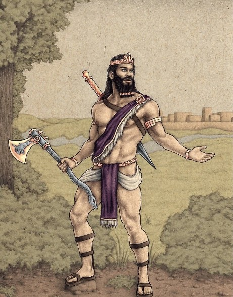
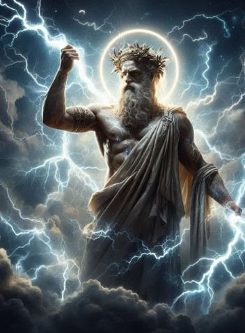
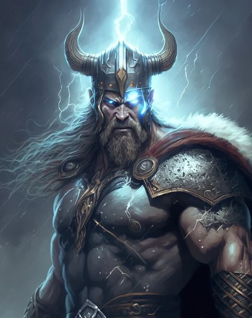
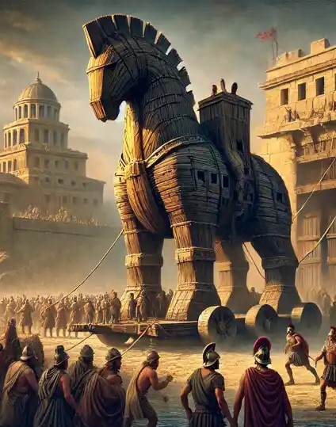
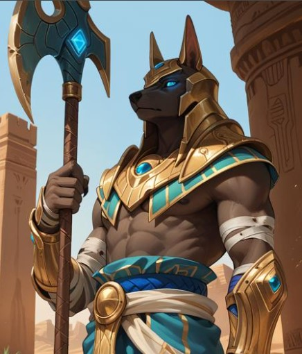
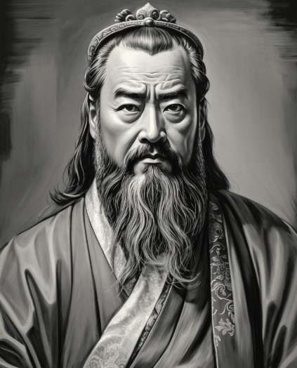
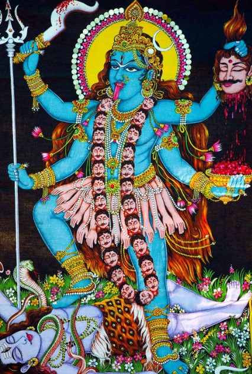
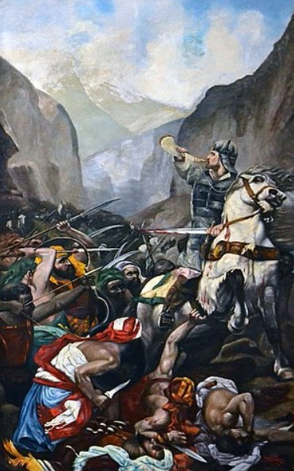

This portfolio showcases a comprehensive collection of the key concepts, and insights that I have acquired throughout my study of World Literature during this midterm. It reflects the wide range of literary works I have explored, from ancient epics to modern classics, and highlights how these texts have deepened my understanding of diverse cultures, themes, and narrative structures.
Epic of Gilgamesh, one of the oldest known literary works.
Pyramid Texts, religious spells inscribed in pyramids.
Vedas, ancient sacred texts.
Book of Songs (Shijing), the oldest existing collection of Chinese poetry.
Homer's Iliad and Odyssey.
Works of Virgil (Aeneid) and Ovid (Metamorphoses).
Edda, foundational text of Norse literature.
Quran, the holy book of Islam.
Beowulf
The Tale of Genji by Murasaki Shikibu, often considered the world's first novel.
Chansons de geste, epic poems celebrating heroic deeds.
Dante Alighieri’s Divine Comedy.
Mesopotamian literature often explores themes of human mortality, the relationship between gods and humans, and the quest for wisdom and immortality. Stories like The Epic of Gilgamesh reflect the struggles of individuals to understand life, fate, and the divine.
Greek literature frequently centers on themes of heroism, fate, and the complexities of human nature. It examines the role of the gods, the pursuit of honor, and the tragic flaws that lead to downfall, as seen in works like The Iliad and The Odyssey.
Roman literature often emphasizes themes of duty, honor, and the grandeur of the Roman state. It explores moral values, political ideals, and personal sacrifice, as seen in works like The Aeneid, which celebrates Rome’s destiny and virtues through its hero, Aeneas.
Hindu literature focuses on themes of dharma (duty), karma (action and consequence), and the pursuit of spiritual enlightenment. Texts like the Bhagavad Gita and Ramayana emphasize moral choices, devotion, and the eternal struggle between good and evil.
Chinese literature often explores themes of harmony, moral integrity, and the importance of family and social order. Works like The Analects and The Book of Songs emphasize virtues such as loyalty, respect, and self-cultivation in alignment with Confucian and Taoist philosophies.
Arabian literature frequently delves into themes of love, honor, bravery, and the wonders of nature and the divine. Works like One Thousand and One Nights and pre-Islamic poetry celebrate heroism, wisdom, and the richness of Arabian culture and folklore.
Egyptian literature often centers on themes of life, death, and the afterlife, reflecting a deep belief in immortality and the gods’ influence. Texts like The Book of the Dead and various hymns and prayers emphasize moral conduct, the soul's journey, and reverence for divine order.
Japanese literature frequently explores themes of nature, transience, and the beauty of simplicity, often reflecting Buddhist and Shinto influences. Works like The Tale of Genji and traditional haiku capture human emotions, fleeting moments, and a deep appreciation for seasonal change and natural beauty.
Norse literature focuses on themes of fate, heroism, and the inevitability of death, emphasizing the relationships between gods and mortals. It explores the pursuit of glory and the moral complexities of human actions.
Norse literature focuses on themes of fate, heroism, and the inevitability of death, emphasizing the relationships between gods and mortals. It explores the pursuit of glory and the moral complexities of human actions.
English literature explores themes of identity, morality, and the human experience, often reflecting societal changes and cultural conflicts. From the moral quandaries in Shakespeare's plays to the existential inquiries in modern novels, it encompasses a wide range of human emotions and social commentary.
Italian literature often explores themes of love, politics, and humanism, reflecting the cultural and intellectual movements of its time. Works like Dante's Divine Comedy and Petrarch's sonnets emphasize the complexities of human emotion, the journey of the soul, and the interplay between the earthly and the divine.
"I rated Hades 5 stars because he’s the ultimate misunderstood god. Often seen as dark and grim, he’s actually a complex character with a sense of justice and loyalty, especially to those he cares about. His relationships with Persephone and his role as the ruler of the Underworld make him fascinating. If you're into complex, morally grey characters with depth, Hades is a must!"
"I rated Gilgamesh 5 stars because he’s a true epic hero—strong, courageous, and deeply human. His journey from arrogance to wisdom is compelling, and his quest for immortality is both relatable and thought-provoking. A timeless character with a rich story that still resonates today. Highly recommended for fans of classic literature and mythology!"
"I rated Odysseus 5 stars because he’s the ultimate hero—clever, resourceful, and incredibly resilient. His 10-year journey home is filled with adventure, danger, and wit. What sets him apart is his intelligence and ability to outthink his challenges. If you love epic tales of survival and cunning, Odysseus is a legendary character you won’t forget!"